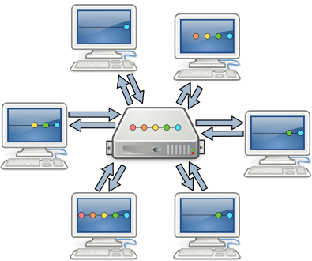
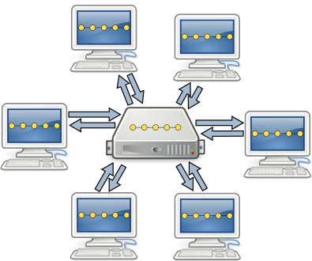

Collaborative software development
a DevOps overview
Development
- Analysis of a domain
- Design of a solution
- Implementation
- Testing
Operations
- IT infrastructure
- Deployment
- Maintenance
Silo mentality

No silos

DevOps culture
-
Increased collaboration
- Dev and Ops should exchange information and work together
-
Shared responsibility
- A team is responsible for the (sub) product for its whole lifetime
- No handing over projects from devs to ops
-
Autonomous teams
- Lightweight decision making process
-
Focus on the process, not just the product
- Promote small, incremental changes
- Automate as much as possible
- Leverage the right tool for the job at hand
Why bother?
-
Risk management
- Reduce the probability of failure
- Detect defects before hitting the market
- Quickly react to problems
-
Resource exploitation
- Use human resources for human-y work
- Reduce time to market
- Embrace innovation
- Exploit emerging technologies
DevOps
- Principles
- Practices
- Tools
Principles inspire practices
Practices require tools
DevOps principles
(not exhaustive)
- Collaboration
- Reproducibility
- Automation
- Incrementality
- Robustness
DevOps practices
- Workflow organization $\Leftarrow$ today’s focus
- Build automation
- Static Analysis
- Dynamic Analysis (testing)
- Continuous Integration
- Continuous Delivery
- Continuous Deployment
- Continuous Monitoring
- Automatic updates
Version Control Systems
A system responsible for managing changes to the project files
- Records the history
- Enables roll-backs
- Promotes collaborative workflows
- Distributed vs. Centralized
- Every developer has a whole copy of the entire history
- There exist a central point of synchronization
- Also called Source Content Management (SCM)
$\Rightarrow$ enable new workflows
Centralized Version Control Systems
Decentralized VCS

Real-world DVCS
Reference DVCS: Git
De-facto reference distributed version control system
- Distributed
- Differential tracking
- Born in 2005 to replace BitKeeper as SCM for the Linux kernel
- Performance was a major concern
- Written in C
- Developed by Linus Torvalds
- Now maintained by Hamano and others
- Unix-oriented
- Tracks Unix file permissions
- Very fast
- At conception, 10 times faster than Mercurial¹, 100 times faster than Bazaar
¹ Less difference now, Facebook vastly improved Mercurial
Funny historical introduction
Distributed version control with git: a recap
You should already be acquainted with the tool, this is an express guide/recap
Sub-commands and files are in monospace, concepts in italic
Distributed version control with git: a recap
Repository
- Collection of metadata containing the history of the project
- Reified in the
.gitfolder - The location of the
.gitfolder marks the root of the repository
Distributed version control with git: a recap
Working tree
- The directory associated with the root of your repository and its contents
- Contains the files tracked by git
- Not all files in the working tree are tracked
Distributed version control with git: a recap
git init
- Initializes a new repository from the current directory
Distributed version control with git: a recap
Stage
The changes that will be saved next

Distributed version control with git: a recap
git add <files>
- Moves the current changes in
<files>into the stage
git reset <files>
- Removes the current changes to
<files>from the stage
Distributed version control with git: a recap
.gitignore
- A file listing the pathspecs that git should ignore even if added
- Adding is still possible via
--force
.gitattributes
- Defines attributes for path names
- Can enforce the correct line ending
- Can provide ways to diff binary file (by conversion to text, needs configuration)
- Example:
* text=auto eol=lf
*.[cC][mM][dD] text eol=crlf
*.[bB][aA][tT] text eol=crlf
*.[pP][sS]1 text eol=crlf
Distributed version control with git: a recap
git commit
- Create a new changeset with the contents of the stage
- Requires a message
- Using appropriate messages is extremely important
HEAD
- Pointer to the current commit
Distributed version control with git: a recap
Branch
- A named development line
master
- Default branch name
- legacy of BitKeeper
- Modern versions of git let user select
- Some prefer
main
Distributed version control with git: a recap
git checkout
- Moves HEAD across commits
- Used to switch branches
- Can be used to create new branches (with
-b)
detached HEAD
- Special mode in which commits are not saved
- The system goes in detached HEAD when HEAD is not the last commit on a branch
Distributed version control with git: a recap
git branch
- Controls creation, visualization, and deletion (
-d) of branches
git merge
- Unifies a target branch with the current branch
- Creates a merge commit
- The merging algorithm is configurable
- Conflicts must be solved manually
$\Rightarrow$ let’s make an experiment!
- clone the repository at https://bit.ly/2021-merge-conflict
- merge branch
featureintomaster
fast-forward
- A special merge mode applicable when a branch is behind another
- The target branch is updated without a commit
- Active by default, can be disabled (
--no-ff)
Distributed version control with git: a recap
Remote
- (possibly remote) locations hosting copies of branches of this repository exist
git remote
- Configures the remotes
upstream
- The default remote for network operations.
Distributed version control with git: a recap
git clone
- Copies a repository from a possibly remote location.
- Alternative to
init - Automatically sets the local branch upstream to the cloned location.
Distributed version control with git: a recap
git fetch <remote>
- Updates the state of
<remote> - If remote is omitted, updates the state of the branch upstream’s remote
git pull <remote> <branch>
- Shortcut for
git fetch && git merge FETCH_HEAD
git push <remote> <branch>
- Sends local changes remote branch
- Requires branches to share a root
- If remote and branch are omitted, updates are sent to the upstream
Advanced git
- Tagging
- Signatures
- Stashing
- Rebasing
- Squashing
- Cherry picking
- Submodules
- Hooks
- Reflog
- Bisection
- …
Best practices
- The CLI is your truth
- Beware of the GUIs
- Prepare an ignore list early
- And maintain it
- And maybe prepare it manually and don’t copy/paste it
- When you have untracked files, decide whether you want to track them or ignore them
- Be very careful with what you track
- Prepare an attribute file
DVCS: Workflows
with great power comes great responsibility
and also
power is nothing without control
Elements to consider:
- How large is the team?
- How complex is the project?
- Do team members work together (in spacetime)?
- Do team members trust each other?
Trunk-based development(-like)
Single branch, shared truth repository, frequent merges
- Small teams, low-complexity projects, colocated teams, high trust
- Typical of small company projects
Git flow (classic)
Multiple branches, shared truth repository

- Large teams, high-complexity projects, preferably colocated teams, high trust
- Typical of large company projects
Git flow structure
Forks versus branches
- In Git, separate development lines are separate branches
- However, everyone has a copy of the same repository
- Git hosting services can identify copies of the same project belonging to different users
These copies are called forks
- Branches on one fork can be requested to be merged on another fork
- With merge request (also called pull request, depending on the host)
- Pull requests enable easier code review
- Necessary when the developer does not trust the contributor
- But very useful anyway
- Working with pull requests is not part of git and requires host support
- GitHub, GitLab, and Bitbucket all support pull requests
Single branch, multiple forks
- Single branch, multiple independent repository copies

- Unknown team size, low-complexity projects, sparse teams, low trust
- Typical of small open source projects
Git flow over multiple forks
- Single branch, multiple independent repository copies
- Unknown team size, high-complexity projects, sparse teams, low trust
- Typical of complex open-source projects (and, often, an overkill)
The build “life cycle”
(Not to be confused with the system development life cycle (SDLC))
The process of creating tested deployable software artifacts
from source code
May include, depending on the system specifics:
- Source code manipulation and generation
- Source code quality assurance
- Dependency management
- Compilation, linking
- Binary manipulation
- Test execution
- Test quality assurance (e.g., coverage)
- API documentation
- Packaging
- Delivery
Build automation
Automation of the build lifecycle
- In principle, the lifecycle could be executed manually
- In reality time is precious and repetitivy is boring
$\Rightarrow$ Create software that automates the building of some software!
- All those concerns that hold for sofware creation hold for build systems creation…
Dependency management
- Any software depends on other software
- The runtime environment (think of the Java Virtual Machine)
- The core libraries (e.g.,
java.*,javax.*) - Possibly third-party libraries (e.g., Google Guava, Apache Commons…)
- Possibly external resources (e.g., images, sounds, translation files…)
- Normally, this software depends on other software
- That depends on other software
- That depends on other software
- That depends on other software, and so on…
- That depends on other software
- That depends on other software
- A normal applications has a tree of dependencies
Towards a dependency hell
- It’s common for non-toy projects to get past 50 dependencies
- Searching, downloading and verifying compatibility by hand is unbearable
- Version conflicts arise soon
- one of your direct dependencies uses library A at version 1
- another uses library A at version 2
- $\Rightarrow$ transitive dependency conflict on A
- Upgrading by hand requires, time, effort and tons of testing
Dealing with dependencies
Source import
Duplication, more library code than business code, updates almost impossible, inconsistencies, unmaintainable
Binary import
Hard to update, toxic for the VCS
Desiderata
- Declarative specification of libraries and versions
- Automatic retrieval
- Automatic resolution of transitive dependencies
- Dependency scopes
- You may need compile-only, test-only, and runtime-only dependencies
- Customizable software sources
Quality Assurance
“It works” is not good enough
(besides, the very notion of “it works” is rather debatable)
- Software quality should be continuously assessed
- The assessment should automatic whenever possible
- QA should be integrated in the build system!
- It is fine to fail the build if quality criteria are not met
Quality Assurance: levels
- Style and coherence
- Flawed programming patterns
- Violations of the DRY principle
- Testing
- Multifaceted issue
- To be executed along the whole software lifecycle
- $\Rightarrow$ Plenty of detail in upcoming lectures
Quality Assurance: style and coherence
Automated checkers are also called linters, often provide an auto-formatting tool
Idiomatic and standardized code:
- reduces complexity
- improves understandandability
- prevents style-changing commits with unintelligible diffs
- lowers the maintenance burden and related costs
- simplifies code reviews
In Java: Checkstyle, PMD
Quality Assurance: flawed programming patterns
Identification and reporting of patterns known to be problematic
- Early-interception of potential bugs
- Enforce good programming principles
- Improves performance
- Reduces complexity
- Reduces maintenance cost
Quality Assurance: violations of the DRY principle
Code replicated rather than reused
- improves understandandability
- Reduces maintenance cost
- simplifies code reviews
General advice: never copy/paste your code
- If you need to copy something, you probably need to refactor something
Multi-language tool: Copy/Paste Detector (CPD) (part of PMD)
Quality Assurance: testing and coverage
Automated software verification
- Unit level
- Integration testing
- End-to-end testing
Extension of testing can be evaluated via coverage.
- Coverage tells you how much code is untested, not how much is tested
Several frameworks, recommended ones:
- Testing for all JVM languages: Junit/Jupiter (JUnit 5)
- Coverage for all JVM languages: JaCoCo
Additional checks and reportings
There exist a number of recommended services that provide additional QA and reports.
Non exhaustive list:
- Codecov.io
- Code coverage
- Supports Jacoco XML reports
- Nice data reporting system
- Sonarcloud
- Multiple measures, covering reliability, security, maintainability, duplication, complexity…
- Codacy
- Automated software QA for several languages
- Code Factor
- Automated software QA
Continuous Integration
The practice of integrating code with the main development line continuously
Verifying that the build remains intact
- Requires build automation to be in place
- Requires testing to be in place
- Pivot point of the DevOps practices
- Historically introduced by the extreme programming (XP) community
- Now widespread in the larger DevOps community
The Integration Hell
- Traditional software development takes several months for “integrating” a couple of years of development
- The longer there is no integrated project, the higher the risk


Microreleases and protoduction
- High frequency integration may lead to high frequency releases
- Possibly, one per commit
- Of course, versioning must be appropriate…
Traditionally, protoduction is jargon for a prototype that ends up in production

- Traditionally used with a negative meaning
- It implied software
- unfinished,
- unpolished,
- badly designed
- Very common, unfortunately
- It implied software
- This si different in a continuously integrated environment
- Incrementality is fostered
- Partial features are up to date with the mainline
Intensive operations should be elsewhere
- The build process should be rich and fast
- Operations requiring a long time should be automated
- And run somewhere else than devs' PCs

Continuous integration software
Software that promotes CI practices should:
- Provide clean environments for compilation/testing
- Provide a wide range of environments
- Matching the relevant specifications of the actual targets
- High degree of configurability
- Possibly, declarative configuration
- A notification system to alert about failures or issues
- Support for authentication and deployment to external services
Plenty of integrators on the market
- GitHub Actions, Circle CI, Travis CI, Werker, done.io, Codefresh, Codeship, Bitbucket Pipelines…
Core concepts
Naming and organization is variable across platforms, but in general:
- One or more pipelines can be associated to events
- For instance, a new commit, an update to a pull request, or a timeout
- Every pipeline is composed of a sequence of operations (jobs, stages, phases)
- Every operation could be composed of sequential or parallel sub-operations (jobs, phases, steps)
- How many hierarchical levels are available depends on the specific platform
- GitHub Actions: workflow $\Rightarrow$ job $\Rightarrow$ step
- Travis CI: build $\Rightarrow$ stage $\Rightarrow$ job $\Rightarrow$ phase
- Execution happens in a fresh system (virtual machine or container)
- Often containers inside virtual machines
- The specific point of the hierarchy at which the VM/container is spawned depends on the CI platform
Automated delivery
Once the reference environment in CI completed the software construction and testing, it should sign and then deliver the result.
- Possibly, even deploy the result, putting it at work
Some delivery targets
- GitHub releases
- Retract, language agnostic, good for releases
- Sonatype OSSRH (a.k.a. Maven Central)
- De-facto standard for JVM products, no retract policy
- GitHub packages
- No retract, authentication required also in read mode, immature
JFrog Bintray✝ 2021-05-01- Maven Central + other stuff
In this repository, delivery is enabled towards all the aforementioned destinations
No-retract
Your error will remain in the repositories forever and you will never be able to fix it, you will need to create a new release with a different version number.
Anectodal apologia of no-retract policies
In March 2016, Azer Koçlu unpublished more than 250 of his modules
from NPM, which is a popular package manager used by Javascript
projects to install dependencies, because he was asked to rename the
module Kik, whose name is the same of an instant messaging app that
wanted to publish a homonym module.
Unfortunately, one of those dependencies was left-pad, a 11-line-long
Javascript module, used by thousands of projects. This brought
breackages throughout many Javascript products (most notably Node and
Babel). NPM had to un-unpublish left-pad.
Picking version numbers
Without compliance to some sort of formal specification, version numbers are essentially useless for dependency management. By giving a name and clear definition to the above ideas, it becomes easy to communicate your intentions to the users of your software.
Semantic versioning
- Formally described, RFC-style
- Three levels plus optional:
MAJOR.MINOR.PATCH[-OTHER][+BUILD]MAJOR— Any incompatible API change- Major
0is for initial development: anything may change at any time.
- Major
MINOR— Add functionality in a backwards-compatible mannerPATCH— Backwards-compatible bug fixesOTHER— Optionally decorates the version with additional information.BUILD— Optionally decorates the version with build information.
- First release:
0.1.0,1.0.0formalizes the API